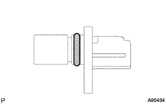
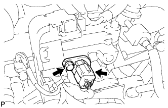

Cam Position Sensor (2AZ-FE) Installation |
| 1. Install Camshaft Position Sensor |
 |
Apply a light coat of engine oil to the O-ring.
 |
Install the camshaft position sensor with the bolt.
Connect the cam position sensor connector.
| 2. Install Air Cleaner Cap w/ Air Cleaner Hose |
Install the hinge portion first, then install the air cleaner cap with the 3 clamps.
 |
Install air cleaner hose No.1 to the throttle body assembly and release the lock of air cleaner hose clamp No.1.
 |
Connect the clamp and intake air flow meter connector.
 |
Connect the fuel vapor feed hose and fuel vapor feed hose No.2 to vacuum switching valve assembly No.1.
Connect the clamp and vacuum switching valve connector.
Connect the ventilation hose.
| 3. Install Engine Cover Sub-assembly NO.1 |
 |
Install the engine cover assembly No.1 with the 2 nuts.
| 4. Connect Battery Negative Terminal |
| 5. Setting Procedure When Disconnecting/Reconnecting Battery Terminal |
)